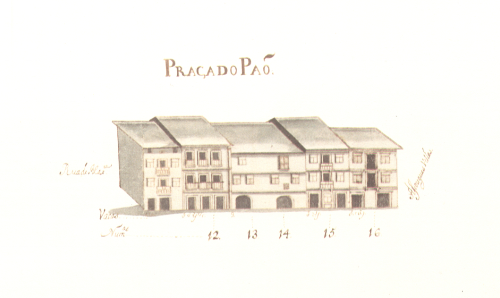

Praça do Pão - vista norte.Praça do Pão - vista sul.
Pequena praça em frente à fachada da Sé, que ao longo dos séculos foi tendo uma vida e importância diferentes, mas sempre descendente.
Aberta talvez no séc. XV, resultou da destruição da rua dos Açougues, pequena artéria que então ligava as actuais rua D. Gonçalo Pereira e D. Gualdim Pais. Nessa data instalou-se nela a Praça do Pão. No tempo de D. Diogo de Sousa construiu-se, no ângulo que esta praça faz com a rua de Maximinos, o novo edifício da Câmara Municipal, que seria destruído nos inícios do séc. XIX (No Mappa está na rua de D. Gualdim).
A partir de meados do séc. XVIII, com a mudança da vida comercial para a rua do Souto e zona exterior da porta que tem o mesmo nome, com a erecção da ala barroca do Palácio dos Arcebispos e, defrontando-a, com o novo edifício da Câmara (1755), a praça do Pão irá perdendo toda a sua importância comercial e política.
Em 1868 foi projectado o alargamento da rua de Maximinos, que rapidamente foi levado a cabo, recebendo a nova rua a largura total da praça do Pão. A partir daí deixou de fazer sentido a existência de duas artérias diferentes, sendo este largo integrado na nova rua que, desde 26/11/1925, se passou a chamar rua D. Paio Mendes.
Hoje ainda se conservam algumas das casas existentes no Mappa. Mas as mais interessantes, as dos prazos 4-6 e 13-14 já desapareceram.
Das 5 casas do lado Norte e 9 do lado Sul eram prazos do Cabido 4 e 9, respectivamente.